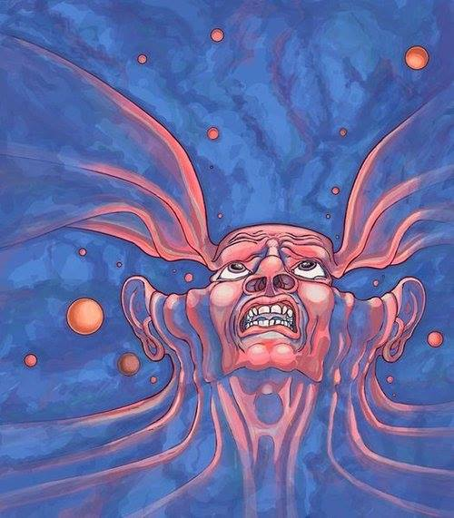
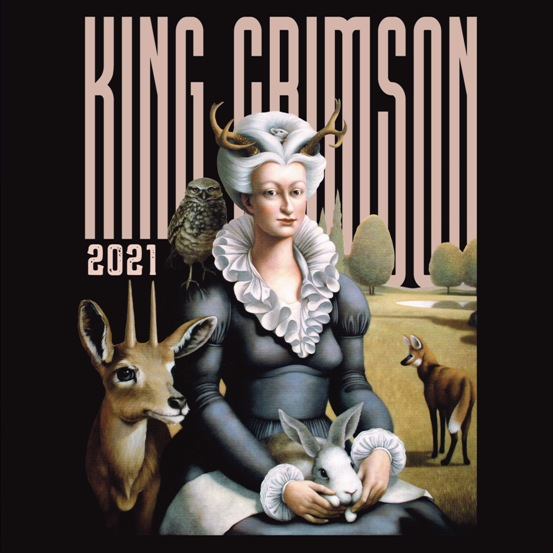
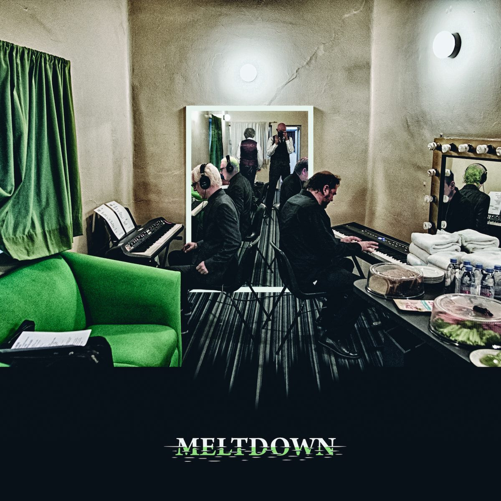
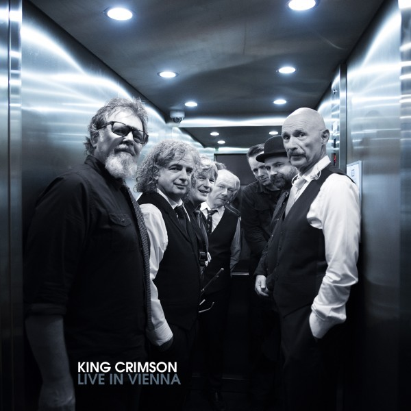
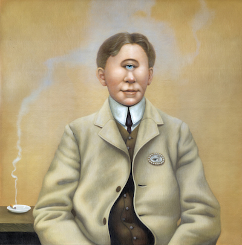

King Crimson
King Crimson
|
|
|
 Sitio en castellano sobre King Crimson y Robert Fripp Comentarios, aportes, sugerencias: webkingcrimson@gmail.com * Music is our friend (doble CD de la gira por USA en 2021)
 * En 2019 King Crimson celebró sus 50 años de existencia realizando una gira de 50 conciertos en ciudades de Europa, Norteamérica y Sudamérica (Brasil, Argentina y Chile) * Afiche de la gira europea 2018, "Tiempos inciertos"
Meltdown - Live in Mexico 2017 (noviembre de 2018)
 Live in Vienna (abril de 2018)
 Radical Action (to Unseat The Hold of Monkey Mind), caja de 6 discos editada en septiembre de 2016. 
|